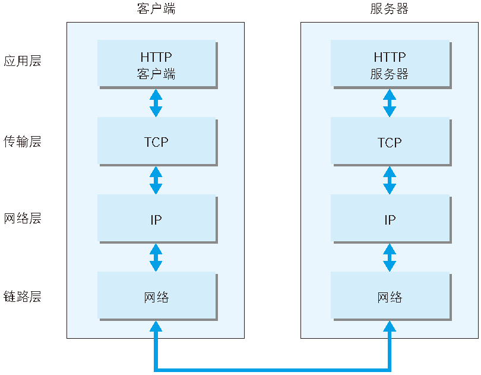
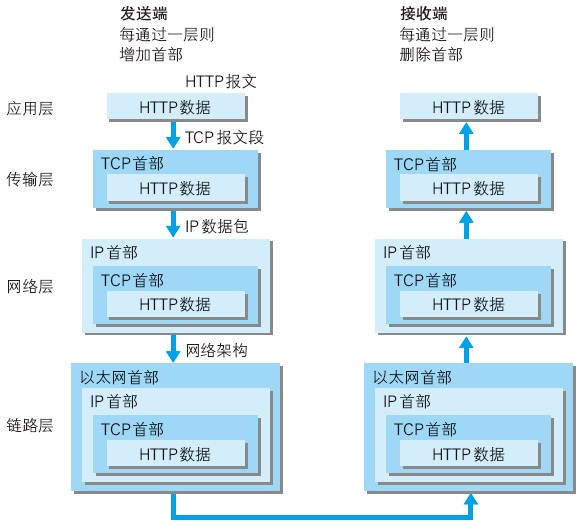
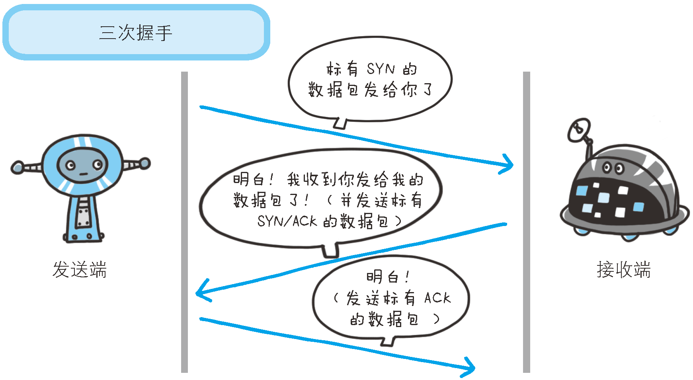
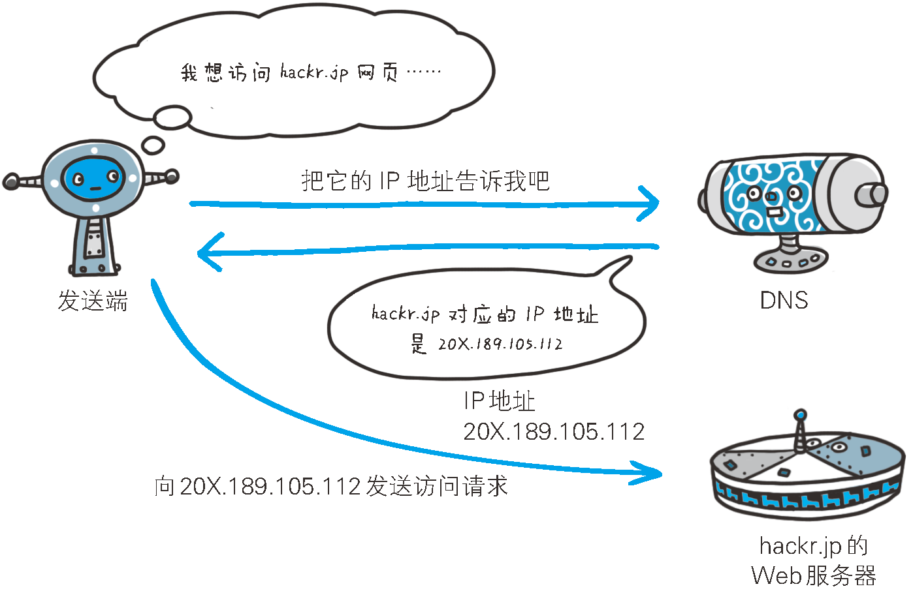

HTTP
TCP/IP
通常使用的网络（包括互联网）是在 TCP/IP 协议族的基础上运作的。而 HTTP 属于它内部的一个子集。
TCP/IP 协议族里重要的一点就是分层。TCP/IP 协议族按层分别为四层：应用层、传输层、网络层和数据链路层。
- 应用层决定了向用户提供应用服务时通信的活动。HTTP 协议处于该层。
- 传输层对上层应用层，提供处于网络连接中的两台计算机之间的数据传输。
- 网络层用来处理在网路上流动的数据包。该层规定了通过怎样的路径（所谓的传输路线）到达对方计算机，并把数据包传送给对方。
- 数据链路层用来处理连接网络的硬件部分。

利用 TCP/IP 协议族进行网络通信时，会通过分层顺序与对方进行通信。发送端从应用层往下走，接收端则从链路层往上走。

发送端在层与层之间传输数据时，每经过一层时必定会被打上一个该层所属的首部信息。反之，接收端在层与层传输数据时，每经过一层时会把对应的首部消去。
这种把数据信息包装起来的做法称为封装（encapsulate）。
IP 协议
按层次分，IP（Internet Protocol）网际协议位于网络层。
IP 协议的作用是把各种数据包传送给对方。而要保证确实传送到对方那里，则需要满足各类条件。其中两个重要的条件是 IP 地址和 MAC 地址（Media Access Control Address）。
IP 地址指明了节点被分配到的地址，MAC 地址是指网卡所属的固定地址。IP 地址可以和 MAC 地址进行配对。IP 地址可变换，但 MAC 地址基本上不会更改。
IP 间的通信依赖 MAC 地址。在网络上，通信的双方在同一局域网（LAN）内的情况是很少的，通常是经过多台计算机和网络设备中转才能连接到对方。而在进行中转时，会利用下一站中转设备的 MAC 地址来搜索下一个中转目标。这时，会采用 ARP 协议（Address Resolution Protocol）。ARP 是一种用以解析地址的协议，根据通信方的 IP 地址就可以反查出对应的 MAC 地址。
TCP 协议
按层次分，TCP 位于传输层，提供可靠的字节流服务。
所谓的字节流服务（Byte Stream Service）是指，为了方便传输，将大块数据分割成以报文段（segment）为单位的数据包进行管理。TCP 协议为了更容易传送大数据才把数据分割，而且 TCP 协议能够确认数据最终是否送达到对方。
为了准确无误地将数据送达目标处，TCP 协议采用了三次握手（three-way handshaking）策略。握手过程中使用了 TCP 的标志（flag） —— SYN（synchronize） 和 ACK（acknowledgement）。
发送端首先发送一个带 SYN 标志的数据包给对方。接收端收到后，回传一个带有 SYN/ACK 标志的数据包以示传达确认信息。最后，发送端再回传一个带 ACK 标志的数据包，代表“握手”结束。
若在握手过程中某个阶段莫名中断，TCP 协议会再次以相同的顺序发送相同的数据包。

DNS 服务
DNS（Domain Name System）服务是和 HTTP 协议一样位于应用层的协议。它提供域名到 IP 地址之间的解析服务。
计算机既可以被赋予 IP 地址，也可以被赋予主机名和域名。比如 www.hackr.jp。
用户通常使用主机名或域名来访问对方的计算机，而不是直接通过 IP 地址访问。因为与 IP 地址的一组纯数字相比，用字母配合数字的表示形式来指定计算机名更符合人类的记忆习惯。
但要让计算机去理解名称，相对而言就变得困难了。因为计算机更擅长处理一长串数字。
DNS 协议提供通过域名查找 IP 地址，或逆向从 IP 地址反查域名的服务。

各种协议与 HTTP 协议的关系

URI 和 URL
与 URI（统一资源标识符）相比，我们更熟悉 URL（Uniform Resource Locator，统一资源定位符）。URL 正是使用 Web 浏览器等访问 Web 页面时需要输入的网页地址。比如 http://hackr.jp/ 就是 URL。
Uniform规定统一的格式可方便处理多种不同类型的资源，而不用根据上下文环境来识别资源指定的访问方式。另外，加入新增的协议方案（如 http: 或 ftp:）也更容易。
Resource资源的定义是“可标识的任何东西”。不仅是文档文件、图像或服务（例如当天的天气预报）等能够区别于其他类型的，全都可作为资源。另外，资源不仅可以是单一的，也可以是多数的集合体。
Identifier表示可标识的对象。也称为标识符。
URI 就是由某个协议方案表示的资源的定位标识符。协议方案是指访问资源所使用的协议类型名称。
URI 用字符串标识某一互联网资源，而 URL 表示资源的地点（互联网上所处的位置）。URL 是 URI 的子集。
URI 由两个主要的子集构成：
- URL：通过描述资源的位置来描述资源
- URN：通过名字来识别资源，和位置无关
URI 格式
表示指定的 URI，要使用涵盖全部必要信息的绝对 URI、绝对 URL 以及相对 URL。相对 URL，是指从浏览器中基本 URI 处指定的 URL，形如/image/logo.gif。
绝对 URI 的格式：
使用 http: 或 https: 等协议方案名获取访问资源时要指定协议类型。不区分字母大小写，最后附一个冒号（:）。
相对 URL
相对 URL 是 URL 一部分，从路径开始，前面木人使用当前文档的设置
1 | ./image/logo.png |
登录信息（认证）
指定用户名和密码作为从服务器端获取资源时必要的登录信息（身份认证）。此项是可选项。
服务器地址
使用绝对 URI 必须指定待访问的服务器地址。地址可以是类似hackr.jp这种 DNS 可解析的名称，或是192.168.1.1这类 IPv4 地址 名，还可以是[0:0:0:0:0:0:0:1]这样用方括号括起来的 IPv6 地址名。
服务器端口号
指定服务器连接的网络端口号。此项也是可选项，若用户省略则自动使用默认端口号。
带层次的文件路径
指定服务器上的文件路径来定位特指的资源。这与 UNIX 系统的文件目录结构相似。
查询字符串
针对已指定的文件路径内的资源，可以使用查询字符串传入任意参数。此项可选。
片段标识符
使用片段标识符通常可标记出已获取资源中的子资源（文档内的某个位置）。但在 RFC 中并没有明确规定其使用方法。该项也为可选项。
HTTP协议
HTTP 用于客户端和服务器之间的通信。
两台计算机之间使用 HTTP 协议通信时，在一条线路上必定有一端是客户端，另一端是服务器端。
HTTP 协议规定，请求从客户端出发，最后服务器端响应该请求并返回。
报文
请求报文是由请求方法、请求 URI、协议版本、可选的请求首部字段和内容实体构成的。
1 | // 请求行 |
响应报文由协议版本、状态码、用以解释状态码的原因短语、可选的响应首部字段以及实体主体构成。
1 | // 状态行 |
当客户端请求访问资源而发送请求时，URI 需要将作为请求报文中的请求 URI 包含在内。
1 | // URI为完整的请求URI |
如果不是访问特定资源而是对服务器本身发起请求，可以用一个*来代替请求 URI
1 | OPTIONS * HTTP/1.1 |
首部字段
通用首部：客户端和服务器都可以实用的就是通用首部
| 首部 | 描述 |
|---|---|
| Connection | 客户端和服务器是否保持连接 |
| Date | 日期，报文创建时间 |
| Update | 给出了发送端可能想要升级使用新版本或协议 |
| Via | 显示了报文经过的中间节点（代理、网关） |
| Trailer | 如果报文采用分块传输编码方式，可以利用这个首部列出位于报文 trailer 部分的首部集合 |
| Trailer-Encoding | 告诉接收端对报文采用什么编码格式 |
| Cache-Control | 随报文传送缓存指示 |
| Pragma | 早期的随报文传送指示方式 |
请求首部
| 首部 | 描述 |
|---|---|
| Client-IP | 客户端 IP |
| From | 客户端邮件地址 |
| Host | 接收请求的服务器的主机名和端口号 |
| Referer | 提供了包含当前请求 URI 的文档的 URL，告诉服务器自己来源 |
| User—Agent | 发起请求的客户端应用程序 |
| Accept | 告诉服务器能够发送那些媒体类型 |
| Accept-Charset | 告诉服务器能够发送那些字符集 |
| Accept-Encoding | 告诉服务器能够发送那些编码 |
| Accept-Language | 告诉服务器能够发送那些语言 |
| Expect | 允许客户端列出请求所要求的服务器行为 |
| If-Match | 如果 ETag 和文档当前 ETag 匹配，就获取文档 |
| If-Modified-Since | 除非在某个指定日期之后修改过，否则限制这个请求 |
| If-None-Match | 如果 ETag 和当前文档 ETag 不符合，获取资源 |
| If-Range | 允许对文档否个范围内的条件请求 |
| If-Unmodified-Since | 在某个指定日期之后没有修改过，否则现在请求 |
| Cookie | 客户端字符串 |
响应首部
| 首部 | 描述 |
|---|---|
| Age | 响应持续时间 |
| Server | 服务器应用软件名称和版本 |
| Allow | 列出了可用的请求方法 |
| Location | 告诉客户端实在在哪里，用于定向 |
| Content-Base | 解析主体中相对 URL 的基础 URL |
| Content-Encoding | 主体编码格式 |
| Content-Language | 解析主体时适用的语言 |
| Content-Length | 主体的长度或尺寸 |
| Content-Location | 资源实际位置 |
| Content-MD5 | 主体的 MD5 校验和 |
| Content-Range | 在整个资源中此实体部分的字节范围 |
| Content-Type | 主体的 MIME |
| ETag | 主体的实体标记 |
| Expires | 过期时间 |
| Last-Modified | 实体最后一次修改时间 |
方法
GET：获取资源
GET 是最常用的方法，通常用于请求服务器发送某个资源。指定的资源经服务器端解析后返回响应内容。使用 GET 的请求应该只用于获取数据。该方法是幂等（调用一次与连续调用多次是等价的）的，参数以明文传递。POST：传输实体主体
POST 用于想服务器发送数据，通常用来支持 HTML 的表单（input、select、textarea），表单中的数据会被发送到服务器PUT：传输文件
和 GET 从服务器获取资源相反，PUT 用于想服务器写入资源。PUT 的语义就是让服务器用请求的主体部分创建一个请求 URL 命名的文档，如果存在就替换（对资源进行整体覆盖）。该方法是幂等的。HEAD：获得报文首部
HEAD 方法和 GET 方法一样，只是不返回报文主体部分。用于确认 URI 的有效性及资源更新的日期时间等。该方法是幂等的。DELETE：删除文件
DELETE 方法按请求 URI 删除指定的资源，是与 PUT 相反的方法。该方法是幂等的。OPTIONS：询问支持的方法
OPTIONS 方法用于请求 web 服务器告知其支持的各种功能TRACE：追踪路径
TRACE 方法是让 web 服务器端将之前的请求通信返回给客户端的方法。
客户端发送一个请求的时候，这个请求可能会穿过防火墙、代理、网关和一些其它应用程序，没个中间节点都可能修改 HTTP 请求，TRACE 方法允许客户端在最终请求发往服务器的时候，看看它变成了什么样子
TRACE 请求会在目的服务器端发送一个“闭环”诊断，行程最后一站服务器会弹回一条 TRACE 响应，并在响应主题中携带它收到的原始请求报文CONNECT：要求用隧道协议连接代理
CONNECT 方法要求在与代理服务器通信时建立隧道，实现用隧道协议进行 TCP 通信。PATCH：用于对资源进行部分修改
该方法与POST请求类似是非幂等的。
状态码
状态码的职责是当客户端向服务器发送请求时，描述返回的请求结果。借助状态码，用户可以指定服务器端是正常处理了请求，还是出现了错误。
状态码如 200 OK ，以 3 位数字和原因短语组成。
| 状态码 | 类别 | 原因短语 |
|---|---|---|
| 1xx | Informational(信息性状态码) | 接收的请求正在处理 |
| 2xx | Success(成功状态码) | 请求正常处理完毕 |
| 3xx | Redirection(重定向状态码) | 需要进行附加操作以完成请求 |
| 4xx | Client Error(客户端状态码) | 服务器无法处理请求 |
| 5xx | Server Error(服务器状态码) | 服务器处理请求出错 |
1XX
- 100 Continue
初始的请求已经接受，客户应当继续发送请求的其余部分。（HTTP 1.1 新） - 101 Switching Protocols
服务器将遵从客户的请求转换到另外一种协议（HTTP 1.1 新）
2XX 成功
响应的结果表明请求被正确的处理了。
200 OK
表示客户端发来的请求在服务器端被正常处理了。
在响应报文内，随状态码一起返回的信息会因方法的不同而发送改变。- 201 Created
服务器已经创建了文档，Location 头给出了它的 URL。 - 202 Accepted
已经接受请求，但处理尚未完成。 - 203 Non-Authoritative Information
文档已经正常地返回，但一些应答头可能不正确，因为使用的是文档的拷贝（HTTP 1.1 新）。 204 No Content
该状态码代表服务器接收的请求已成功处理，但在返回的响应报文中不含实体的主体部分。另外，也不允许返回任何实体的主体。没有新文档，浏览器应该继续显示原来的文档。如果用户定期地刷新页面，而 Servlet 可以确定用户文档足够新，这个状态代码是很有用的。- 205 Reset Content
没有新的内容，但浏览器应该重置它所显示的内容。用来强制浏览器清除表单输入内容（HTTP 1.1 新）。 206 Partial Content
该状态码表示客户端进行了范围请求，而服务器成功执行了这部分的 GET 请求。响应报文中包含由 Content-Range 指定范围的实体内容。客户发送了一个带有 Range 头的 GET 请求，服务器完成了它（HTTP 1.1 新）。
3XX 重定向
浏览器需要执行某些特殊的处理以正确处理请求。
- 300 Multiple Choices
客户请求的文档可以在多个位置找到，这些位置已经在返回的文档内列出。如果服务器要提出优先选择，则应该在 Location 应答头指明。 301 Moved Permanently
永久性重定向。该状态码表示请求的资源已被分配了新的 URI，以后应使用资源现在所指的 URI。客户请求的文档在其他地方，新的 URL 在 Location 头中给出，浏览器应该自动地访问新的 URL。302 Found
临时性重定向。该状态码表示请求的资源已被分配了新的 URI，希望用户能使用新的 URI 访问。类似于 301，但新的 URL 应该被视为临时性的替代，而不是永久性的。注意，在 HTTP1.0 中对应的状态信息是“Moved Temporatily”。出现该状态代码时，浏览器能够自动访问新的 URL，因此它是一个很有用的状态代码。注意这个状态代码有时候可以和 301 替换使用。例如，如果浏览器错误地请求http://host/~user（缺少了后面的斜杠），有的服务器 返回 301，有的则返回 302。严格地说，我们只能假定只有当原来的请求是 GET 时浏览器才会自动重定向。请参见 307。303 See Other
该状态码表示由于请求对应的资源存在着另一个 URI，应使用 GET 光谷定向获取请求的资源。类似于 301/302，不同之处在于，如果原来的请求是 POST，Location 头指定的重定向目标文档应该通过 GET 提取（HTTP 1.1 新）。304 Not Modified
该状态码表示客户端发送附带条件的请求时，服务器端允许请求访问资源，但因发生请求未满足条件的情况后，直接返回 304 Not Modified。304 状态码返回时，不包含任何响应的主体部分。客户端有缓冲的文档并发出了一个条件性的请求（一般是提供 If-Modified-Since 头表示客户只想比指定日期更新的文档）。服务器告 诉客户，原来缓冲的文档还可以继续使用。- 305 Use Proxy
客户请求的文档应该通过 Location 头所指明的代理服务器提取（HTTP 1.1 新）。 307 Temporary Redirect
和 302 （Found）相同。许多浏览器会错误地响应 302 应答进行重定向，即使原来的请求是 POST，即使它实际上只能在 POST 请求的应答是 303 时才能重定 向。由于这个原因，HTTP 1.1 新增了 307，以便更加清除地区分几个状态代码：当出现 303 应答时，浏览器可以跟随重定向的 GET 和 POST 请求；如果是 307 应答，则浏览器只 能跟随对 GET 请求的重定向。（HTTP 1.1 新）
4XX 客户端错误
4XX 响应结果表明客户端是发生错误的原因所在。
400 Bad Request
请求出现语法错误。401 Unauthorized
发送的请求需要有通过 HTTP 认证（BASIC 认证、DIGEST 认证）的认证信息。客户试图未经授权访问受密码保护的页面。应答中会包含一个 WWW-Authenticate 头，浏览器据此显示用户名字/密码对话框，然后在填 写合适的 Authorization 头后再次发出请求。403 Forbidden
请求资源的访问被服务器拒绝了。资源不可用。服务器理解客户的请求，但拒绝处理它。通常由于服务器上文件或目录的权限设置导致。404 Not Found
服务器上无法找到请求的资源。- 405 Method Not Allowed
请求方法（GET、POST、HEAD、DELETE、PUT、TRACE 等）对指定的资源不适用。（HTTP 1.1 新） - 406 Not Acceptable
指定的资源已经找到，但它的 MIME 类型和客户在 Accept 头中所指定的不兼容（HTTP 1.1 新）。 - 407 Proxy Authentication Required
类似于 401，表示客户必须先经过代理服务器的授权。（HTTP 1.1 新） - 408 Request Timeout
在服务器许可的等待时间内，客户一直没有发出任何请求。客户可以在以后重复同一请求。（HTTP 1.1 新） - 409 Conflict
通常和 PUT 请求有关。由于请求和资源的当前状态相冲突，因此请求不能成功。（HTTP 1.1 新） - 410 Gone
所请求的文档已经不再可用，而且服务器不知道应该重定向到哪一个地址。它和 404 的不同在于，返回 407 表示文档永久地离开了指定的位置，而 404 表示由于未知的原因文档不可用。（HTTP 1.1 新） - 411 Length Required
服务器不能处理请求，除非客户发送一个 Content-Length 头。（HTTP 1.1 新） - 412 Precondition Failed
请求头中指定的一些前提条件失败（HTTP 1.1 新）。 - 413 Request Entity Too Large
目标文档的大小超过服务器当前愿意处理的大小。如果服务器认为自己能够稍后再处理该请求，则应该提供一个 Retry-After 头（HTTP 1.1 新）。 - 414 Request URI Too Long
URI 太长（HTTP 1.1 新）。 - 416 Requested Range Not Satisfiable
服务器不能满足客户在请求中指定的 Range 头。（HTTP 1.1 新）
5XX 服务器错误
5XX 的响应结果表明服务器本身发生错误。
500 Internal Server Error
服务器端在执行请求时发生了错误。也有可能是 Web 应用存在的 bug 或某些临时的故障。- 501 Not Implemented
服务器不支持实现请求所需要的功能。例如，客户发出了一个服务器不支持的 PUT 请求。 - 502 Bad Gateway
服务器作为网关或者代理时，为了完成请求访问下一个服务器，但该服务器返回了非法的应答。 503 Service Unavailable
服务器暂时处于超负荷或正在进行停机维护，现在无法处理请求。例如，Servlet 可能在数据库连接池已满的情况下返回 503。服务器返回 503 时可以提供一个 Retry-After 头。- 504 Gateway Timeout
由作为代理或网关的服务器使用，表示不能及时地从远程服务器获得应答。（HTTP 1.1 新） - 505 HTTP Version Not Supported
服务器不支持请求中所指明的 HTTP 版本。（HTTP 1.1 新） 状态码
状态码
HTTPS
HTTP 存在以下问题，通信内容在所有的通信线路上都有可能遭到窥视。
- 通信使用铭文（不加密），内容可能会被窃听。
- 不验证通信放的身份，因此有可能遭遇伪装（不确认通信方，不论是谁发送过来的请求都会返回响应）。
无法证明报文的完整性，所以又可能已遭篡改
为解决这些问题需要在 HTTP 上再加入加密处理和认证等机制。我们把添加了加密及认证机制的 HTTP 称之为 HTTPS（HTTP Secure）。
HTTPS 并非是应用层的一种新协议。只是 HTTP 通信接口部分用 SSL（Secure Socket Layer）和 TLS（Transport Layer Security）协议代替而已。
通常，HTTP 直接和 TCP 通信。当使用 SSL 时，则演变成先和 SSL 通信，再由 SSL 和 TCP 通信了。
SSL 是独立于 HTTP 的协议，所以不只是 HTTP 协议，其他运行在应用层的协议均可配合 SSL 协议使用。